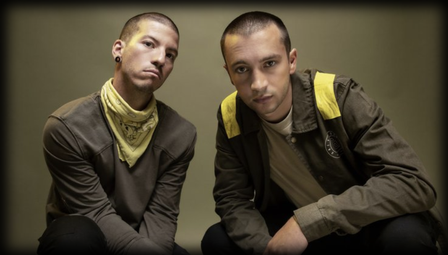

TWENTY ONE PILOTS
In 2015 brak Twenty One Pilots onze Heineken al helemaal af met een drummende crowdsurf en een achteruitsalto van de piano af – en natuurlijk met Stressed Out en Ride.
lees meerIn 2015 brak Twenty One Pilots onze Heineken al helemaal af met een drummende crowdsurf en een achteruitsalto van de piano af – en natuurlijk met Stressed Out en Ride.
lees meerHet Britse duo maakt herrie voor tien: Mike Kerr tovert uit zijn basgitaar de meest slepende hardrockriffs en Ben Thatcher drumt zo furieus dat de headbangers onder ons van heel goeden huize moeten komen.
lees meer
Dat de hypnotiserende sound van Tame Impala grootse potentie had, wisten we al toen de band in 2010 zijn debuutalbum uitbracht – niet voor niets staan we er sindsdien op dat de Australiërs zo nu en dan naar Lowlands komen. Met de talloze hints naar een nieuw album is de kans groot dat kippenvelhits als Let It Happen en The Less I Know the Better tijdens hun show straks in Biddinghuizen worden aangevuld met nieuwe magie van de dromende hoeders van de psychedelische pop.
lees meer
Zulke postpunklegendes bij ons op Lowlands, dat is niet minder dan een eer. Natuurlijk kijken we uit naar elektronische dansvloerknallers als Blue Monday en The Perfect Kiss, maar hopelijk sleept New Order ons ook mee de duistere diepte in naar de vroege jaren 80, toen onheilspellende postpunk nog de boventoon voerde. lees meer

Meer dan tien jaar geleden sloot Lowlands The National in de armen en sindsdien komen de introverte rockers regelmatig terug voor een troostende groepshug. Die kun je wel gebruiken met hun weemoedige songs en de massale kippenvelmomenten die ze veroorzaken. lees meer
tot de jaloezie van de telaatkomers werd er gemoshpit alsof er een punkband stond, geraved als op een gabberfeest en gesprongen alsof het, nou ja, simpelweg het perfect Lowlandsfeestje was. De rapper en YouTube-sensatie raakte daar al snel aan gewend, want ook andere zalen en festivalweides bleken te klein voor de terrorparty van de nonchalante entertainer.
lees meerAls er een WK Allround in de hiphop bestond, dan was Anderson .Paak ongetwijfeld de te kloppen man. De funky Californiër uit de stal van Dr. Dre kan immers alles: rappen, zingen, produceren én drummen. lees meer

In het pantheon van Nederlandse rockbands kan met een gerust hart worden gezegd dat De Staat tot de absolute top behoort. Voor wie de afgelopen tien jaar onder een stoeptegel geleefd heeft: vijf spijkertrekkers uit Nijmegen blazen de pannen strak van de daken met pitch-perfect rockshows overal in den binnen- en buitenlande. lees meer